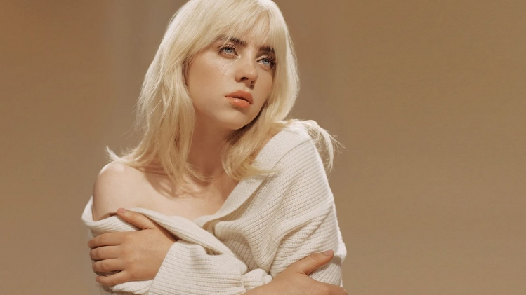
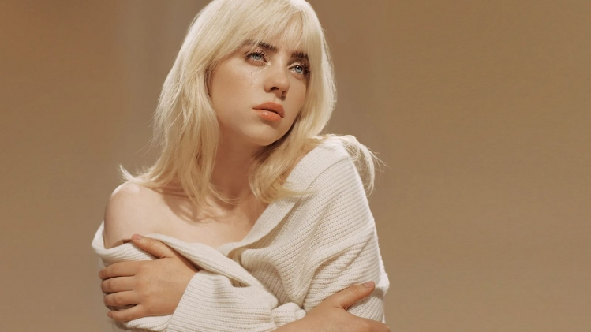

Festival 2023 Rock en Seine
Présentation rapide
Billie Eilish naît à Los Angeles de Maggie et Patrick O’Connell, tous deux passionnés de musique. Elle a un frère aîné, Finneas. Pour favoriser leur créativité et resserrer les liens entre leurs enfants, les parents éduquent Billie et son frère à la maison. Le frère et la sœur grandissent dans l’amour de la musique : tandis que leur père leur fait découvrir des groupes de différents styles, comme The Beatles et Linkin Park, leur mère leur apprend le solfège. A l’âge de 8 ans, Billie Eilish pousse ses premières vocalises dans le chœur des enfants de Los Angeles. Par ailleurs, elle pratique l’équitation et la danse. Mais c’est le chant qu’elle préfère. Quelques années plus tard, elle commence à écrire et chanter ses propres chansons, influencée par des artistes comme Lana Del Rey, mais aussi de nombreux artistes du hip-hop et du R&B comme Drake, Miguel et Earl Sweatshirt. Elle prend alors exemple sur son frère qui est déjà musicien dans un groupe
Carrière
À 13 ans, elle travaille des chansons avec son frère, qui écrit,
produit et compose avec elle. “On a commencé à faire de la musique
ensemble, c'était fantastique. Je me souviens... J'ai l'impression
que notre relation, professionnellement parlant, est devenue de plus
en plus saine. Quand on était jeunes, on se chamaillait, de manière
pas très pro”, indique son frère.
À 14 ans, elle sort Ocean
Eyes, en collaboration avec Finneas, qui recueille plus d'un
milliard de vues en streaming. Dès son premier single, cette
chanteuse originaire de Los Angeles a captivé le public avec ses
paroles profondes et sa voix envoûtante. Son frère, Finneas
O'Connell, l'a soutenue dès le début de sa carrière, collaborant
étroitement avec elle pour créer des chansons qui ont rapidement
conquis le monde. En 2019, elle explique : “Je joue comme si j'étais
en plein dans la fosse. Et j'essaie de faire que tous les gens, même
ceux qui ne sont pas dans la fosse, aient l'impression d'y être.” À
16 ans, après que des vidéos de ses tics physiques ont commencé à
faire surface, elle révèle qu'on lui a diagnostiqué le syndrome de
la Tourette quand elle était enfant. Elle utilise sa notoriété pour
défendre le véganisme et les droits des animaux.
À 17 ans, elle
sort son premier album studio, When We All Fall Asleep, Where Do We
Go? Le single Bad Guy devient un tube mondial. “Nous avons fait cet
album dans une chambre de la maison où nous avons grandi, et il a
été masterisé dans le salon de quelqu'un. Donc on dirait vraiment
que tout est possible.”, indique-t-elle. L'année de son début,
Billie Eilish a en effet sorti son premier album, qui a fait
sensation dès sa première semaine de sortie. Ses titres ont dominé
les classements musicaux et ont été largement diffusés à la radio.
Ses singles à succès ont été incontournables, la propulsant au
sommet de la musique populaire.
Par ses choix vestimentaires,
elle cherche à se différencier de l'image traditionnelle de la pop
star. Elle explique que porter ses vêtements amples lui permet de se
“libérer” et l'aide à éviter la sexualisation ou le sentiment de
honte vis-à-vis de son corps. À 18 ans, elle devient la plus jeune
artiste et la première femme à avoir jamais été récompensée pour
l'enregistrement de l'année pour la chanson, pour l'album de
l’année, pour la meilleure nouvelle artiste aux Grammy awards la
même année. “Les nominations pour les Grammy's ont commencé à 5h du
matin. Ma mère est entrée et elle m'a annoncé la nouvelle de sa voix
la plus joyeuse. Nous avons appelé mon frère et j'ai appris qu'il
était également nommé, mon cœur s'est mis à battre à toute
vitesse.”
La même année, elle interprète No Time to Die pour le
nouveau James Bond. En mars 2020, elle annule sa tournée mondiale à
cause du Covid-19. En octobre 2020, elle organise un concert en
streaming live en soutien aux professionnels de l'industrie du
divertissement. À 19 ans, elle sort son deuxième album, Happier Than
Ever. Il est immédiatement numéro un dans une vingtaine de pays. En
2022, elle réduit l'impact environnemental de sa tournée et
sensibilise ses fans à l'écologie. A 21 ans, elle sort What Was I
Made For pour le film Barbie de Greta Gerwig. “Tout ce que j'ai
toujours voulu, c'est être sur scène et avoir des gens qui
m'encouragent. J'ai toujours adoré être sur scène.”
Clip video
Quelques Photos
 
